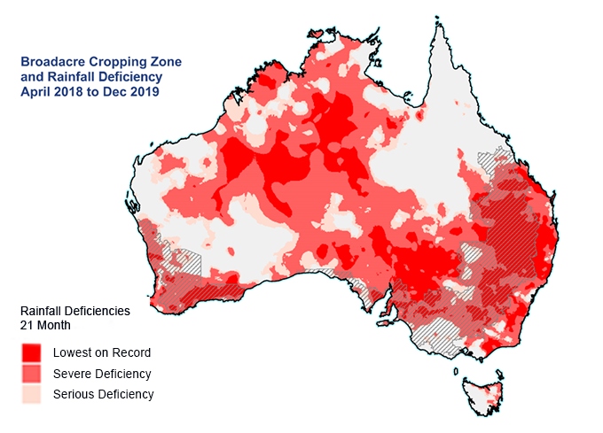

GIF Satellitare: Diffusione degli incendi
L’animazione seguente, ottenuta da dati satellitari NASA/NOAA, mostra l’evoluzione temporale degli incendi durante la stagione 2019-2020. I punti rossi rappresentano i focolai attivi, mentre le aree annerite evidenziano la vegetazione bruciata. L’Australia ha vissuto una stagione estremamente lunga e violenta, con incendi che hanno bruciato oltre 18 milioni di ettari di territorio.
Il video mostra chiaramente come la situazione sia peggiorata nelle zone orientali, in particolare nel Nuovo Galles del Sud e nel Victoria, con un’escalation rapida a causa delle condizioni atmosferiche estreme e dei venti forti.

Condizioni di Siccità Prima degli Incendi
Questa mappa, pubblicata dal Bureau of Meteorology australiano, mostra lo stato del suolo e delle precipitazioni nei mesi precedenti agli incendi. Le aree in rosso e arancio scuro indicano regioni colpite da siccità estrema o eccezionale.
Il 2019 è stato uno degli anni più secchi mai registrati in Australia. Questo ha comportato un accumulo enorme di materiale secco (foglie, rami, erba), che ha agito da combustibile naturale. Inoltre, le temperature record hanno creato un microclima perfetto per l’innesco di incendi anche da una sola scintilla.
Osservazioni e Impatti
L’analisi visiva degli incendi non serve solo a documentare la tragedia: è anche uno strumento fondamentale per:
- Prevedere le aree ad alto rischio in futuro.
- Studiare il comportamento del fuoco in funzione del clima.
- Organizzare meglio le squadre di soccorso e evacuazione.
- Educare l’opinione pubblica sull’impatto del cambiamento climatico.
L’uso delle immagini satellitari e delle mappe climatiche è ormai parte integrante della strategia australiana di difesa contro gli incendi.